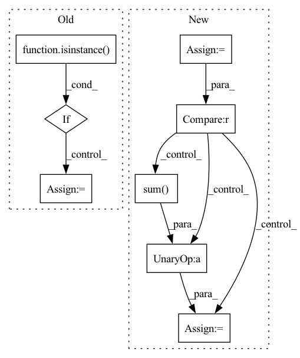

Pattern ID :4705

Before Change
name: save figure as <name>.png
all_activations = []
if isinstance(labels, str):
activations = pd.read_csv(f"{model_dir}{directory}/{labels}_activations.csv")
// Reference for row to label
label_handle = [labels] * len(activations)
else:
// Accumulate activations & label handle
activations = []
After Change
// Activations
temp = pd.read_csv(f"{model_dir}{directory}/{kind}/{label}_activations.csv")
num_null = temp.isna().any(axis=1).sum()
if num_null > 0 and len(temp) == len(df_class):
print(f"{label} contains {num_null} null values!")
// Filter out NAs
df_class = df_class.loc[~temp.isna().sum(axis=1).map(lambda x: x > 0)]
df_class.to_csv(class_meta_filename, index=False)
print(f"{label} updated!")
// Accumulate non-null activations
In pattern: SUPERPATTERN
Frequency: 3
Non-data size: 8
Instances
Fragment ID: 16773597
Project Name: stan-hua/cytoimagenet
Commit Name: 1ab297e870800b585b527efea61b1dad69bc8ee4
Time: 2021-08-03
Author: stanley.hua@mail.utoronto.ca
File Name: scripts/visualize_classes.py
M Class Name: AnonimousClass
N Class Name: AnonimousClass
M Method Name: create_umap(3)
N Method Name: create_umap(2)
M Parent Class:
N Parent Class:
M File Name: scripts/visualize_classes.py
N File Name: scripts/visualize_classes.py
M Start Line: 142
M End Line: 160
N Start Line: 142
N End Line: 192
'>
Before Change
index = edge_index[dim]
if edge_weights is None:
if isinstance(edge_index, Tensor):
edge_weights = torch.ones(edge_index.size(1), dtype=torch.int,
device=edge_index.device)
else:
edge_weights = np.ones(edge_index.shape[1], dtype=np.int)
degree = weighted_degree(index, edge_weights, num_nodes=num_nodes)
return edge_index, edge_weights / degree[index]
After Change
num_nodes (int, optional): The number of nodes, *i.e.*
:obj:`max_val + 1` of :attr:`index`. (default: :obj:`None`)
backend = infer_backend(edge_index)
if backend is torch_sparse:
assert edge_weights is None
deg = edge_index.sum(dim=dim).to(torch.float)
deg_inv = deg.pow(-1.0)
deg_inv[deg_inv == float("inf")] = 0
edge_index = deg_inv.view(-1, 1) * edge_index
return edge_index, None
index = edge_index[dim]
'>
Fragment ID: 16773594
Project Name: torchspatiotemporal/tsl
Commit Name: 50089afdf23de12eb6d11e9d5e7e64d949d45611
Time: 2022-08-18
Author: ivan.marisca@hotmail.it
File Name: tsl/ops/connectivity.py
M Class Name: AnonimousClass
N Class Name: AnonimousClass
M Method Name: normalize(4)
N Method Name: normalize(4)
M Parent Class:
N Parent Class:
M File Name: tsl/ops/connectivity.py
N File Name: tsl/ops/connectivity.py
M Start Line: 181
M End Line: 187
N Start Line: 215
N End Line: 225
'>
Before Change
index = edge_index[dim]
if edge_weights is None:
if isinstance(edge_index, Tensor):
edge_weights = torch.ones(edge_index.size(1), dtype=torch.int,
device=edge_index.device)
else:
edge_weights = np.ones(edge_index.shape[1], dtype=np.int)
degree = weighted_degree(index, edge_weights, num_nodes=num_nodes)
return edge_index, edge_weights / degree[index]
After Change
num_nodes (int, optional): The number of nodes, *i.e.*
:obj:`max_val + 1` of :attr:`index`. (default: :obj:`None`)
backend = infer_backend(edge_index)
if backend is torch_sparse:
assert edge_weights is None
deg = edge_index.sum(dim=dim).to(torch.float)
deg_inv = deg.pow(-1.0)
deg_inv[deg_inv == float("inf")] = 0
edge_index = deg_inv.view(-1, 1) * edge_index
return edge_index, None
index = edge_index[dim]
'>
Fragment ID: 16773592
Project Name: torchspatiotemporal/tsl
Commit Name: f28e5a2fddc34eeb90a13c113512c8ab12b6138b
Time: 2022-07-20
Author: ivan.marisca@hotmail.it
File Name: tsl/ops/connectivity.py
M Class Name: AnonimousClass
N Class Name: AnonimousClass
M Method Name: normalize(4)
N Method Name: normalize(4)
M Parent Class:
N Parent Class:
M File Name: tsl/ops/connectivity.py
N File Name: tsl/ops/connectivity.py
M Start Line: 181
M End Line: 187
N Start Line: 215
N End Line: 225